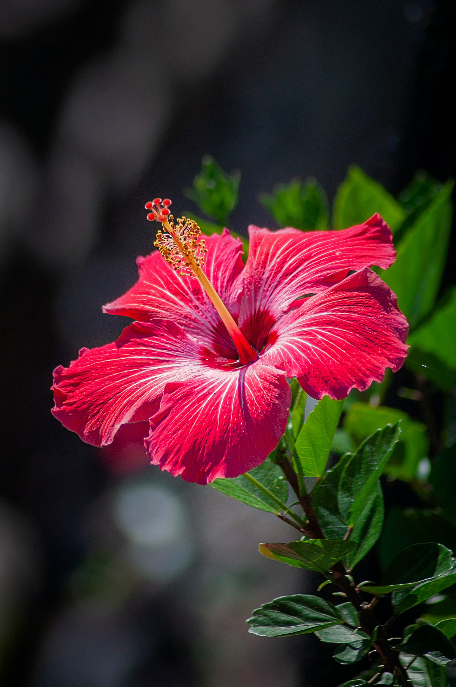

Hibiscus
Hibiscus
Hibiscus is a vibrant flowering plant known for its large, colorful blooms. It is commonly grown in warm climates and is a beautiful addition to gardens.
Full Sun
Moderate
Fertile & Well Drained
Spring & Summer
How to Care for Hibiscus
Hibiscus grows well with plenty of sunlight, regular watering and fertile soil with good drainage.
Sunlight
Place hibiscus in a sunny location where it can receive several hours of sunlight each day.
Watering
Water regularly when the top layer of soil begins to dry, especially during warm weather.
Soil
Use fertile, well-drained soil that can hold enough moisture without becoming waterlogged.
Pruning
Remove weak or damaged growth and lightly prune when needed to maintain a healthy shape.
How to Grow Hibiscus
Hibiscus can grow beautifully in gardens and containers when provided with warmth, sunlight and regular care.
Choose a Sunny Location
Select a warm location that receives plenty of direct sunlight.
Prepare the Soil
Use fertile soil with good drainage and enough organic matter to support healthy growth.
Plant the Hibiscus
Plant it with enough space around the plant for growth and good air circulation.
Provide Regular Care
Give regular water, sunlight and occasional pruning to encourage healthy flowering.
Hibiscus Fact 🌺
Hibiscus flowers are available in many colors, including red, pink, yellow, orange and white.